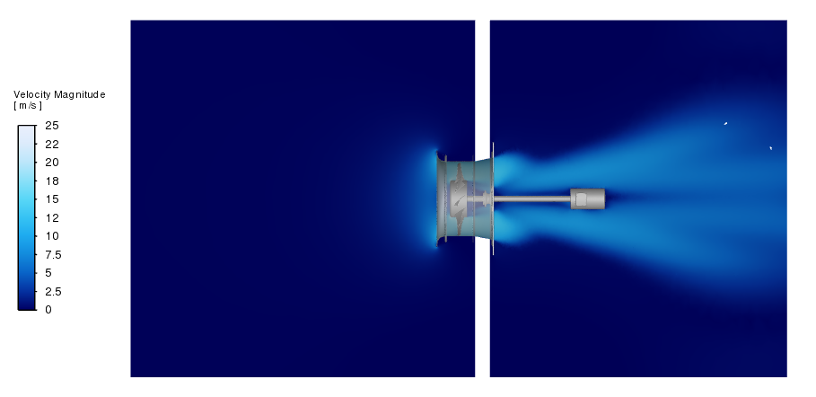
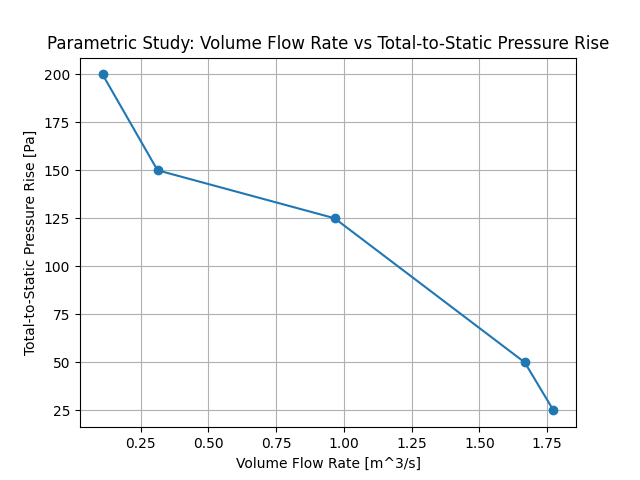

Note
Go to the end to download the full example code.
Axial Fan Performance Curve Workflow#
Contributors: Mustafa Kaddoura, Achilleas Krikas
Overview#
This example demonstrates an end-to-end PyFluent workflow for simulating an axial fan and performing a parametric study to generate its performance curve.
The workflow includes: * Importing a CFD mesh * Defining input parameters for the parametric study * Configuring the Fluent solver and physical models * Creating report definitions and output parameters * Running the parametric study across multiple operating conditions * Plotting the resulting fan performance curve
{kind=link}

Problem description schematic showing an axial fan inside a short duct.#
Solution Setup#
%% Import required libraries and download required files ^^^^^^^^^^^^^^^^^^^^^^^^^^^^^^^^^^^^^^^^^^^^^^^^^^^^^^^
import os
import matplotlib.pyplot as plt
import numpy as np
import ansys.fluent.core as pyfluent
from ansys.fluent.core import examples
# Download the example mesh file
import_file_name = examples.download_file(
"axial_fan.msh.h5",
"pyfluent/axial_fan_performance_curve",
save_path=os.getcwd(),
)
Launch Fluent#
Launch Fluent in solution mode with double precision running on eight processors.
solver = pyfluent.launch_fluent(
mode=pyfluent.FluentMode.SOLVER,
precision=pyfluent.Precision.DOUBLE,
ui_mode=pyfluent.UIMode.GUI,
processor_count=8,
cleanup_on_exit=True,
)
Read mesh file and perform mesh check#
Import the mesh and perform a mesh check.
solver.settings.file.read_mesh(file_name=import_file_name)
solver.settings.mesh.check()
Creat input parameters#
Create named expressions for the pressure outlet boundary condition and for the fan rotational speed, and set them as input parameters. Pressure outlet value is set to 0.0 Pa (atmospheric gauge pressure) and rotational speed is set to 155.534 rad/s.
# Create a named expression to parameterize the pressure outlet value
solver.settings.setup.named_expressions.create(name="pressure_outlet")
solver.settings.setup.named_expressions["pressure_outlet"].definition = "0 [Pa]"
solver.settings.setup.named_expressions["pressure_outlet"].input_parameter = True
# Create a named expression to parameterize the rotational speed value
solver.settings.setup.named_expressions.create(name="rotational_speed")
solver.settings.setup.named_expressions["rotational_speed"].definition = (
"155.534 [rad/s]"
)
solver.settings.setup.named_expressions["rotational_speed"].input_parameter = True
Solver setup#
Set the solver type to pressure-based, and analysis type to steady state, and activate gravity in the negative x-direction.
# General: Solver Type: Pressure-Based
solver.settings.setup.general.solver.type = "pressure-based"
# General: Time: Steady State
solver.settings.setup.general.solver.time = "steady"
# General: activate gravity
solver.settings.setup.general.operating_conditions.gravity.enable = True
solver.settings.setup.general.operating_conditions.gravity.components = [-9.81, 0, 0]
Models: Turbulance/Viscous model#
Set the turbulance/viscous model to SST k-omega model. Activate curvature correction, production Kato-Launder, and production limiter options.
viscous = solver.settings.setup.models.viscous
viscous.model = "k-omega"
viscous.k_omega_model = "sst"
solver.settings.setup.models.viscous.options.curvature_correction.enabled = True
solver.settings.setup.models.viscous.options.production_kato_launder_enabled = True
solver.settings.setup.models.viscous.options.production_limiter.enabled = True
Cell zones#
Activate the Multiple Reference Frame (MRF) model for the <code>’rotating-fan’</code> zone, specify the Y-axis as axis of rotation, and set the rotational speed using the previously defined input parameter. Keep the default setting for the remaining cell zones.
# Activate MRF model for the 'rotating fan' zone
solver.settings.setup.cell_zone_conditions.fluid[
"rotating-fan"
].reference_frame.frame_motion = True
# Assign the rotational speed value to the MRF angular velocity parameter
solver.settings.setup.cell_zone_conditions.fluid[
"rotating-fan"
].reference_frame.mrf_omega.value = "rotational_speed"
# rotating fan zone: Specify Rotation-Axis Direction (X, Y, Z): [0,1,0] for Y-axis rotation
solver.settings.setup.cell_zone_conditions.fluid[
"rotating-fan"
].reference_frame.reference_frame_axis_direction[0].value = 0
solver.settings.setup.cell_zone_conditions.fluid[
"rotating-fan"
].reference_frame.reference_frame_axis_direction[1].value = 1
solver.settings.setup.cell_zone_conditions.fluid[
"rotating-fan"
].reference_frame.reference_frame_axis_direction[2].value = 0
Boundary conditions#
Set the <code>’inlet’</code> boundary as pressure-inlet boundary condition type, and assign to it a pressure value of 0.0 Pa (atmospheric gauge pressure). Set the <code>’pressure-outlet’</code> boundary as pressure-outlet boundary condition type, and assign to it the previously defined input parameter. Keep the remaining boundaries as no-slip wall boundary condition type (default settings - no changes)
boundary_conditions = solver.settings.setup.boundary_conditions
# Boundary conditions: 'inlet' boundary: type: Pressure Inlet
boundary_conditions.set_zone_type(new_type="pressure-inlet", zone_list=["inlet"])
inlet = solver.settings.setup.boundary_conditions.pressure_inlet["inlet"]
inlet.momentum.gauge_total_pressure.value = 0
inlet.turbulence.turbulence_specification = "Intensity and Viscosity Ratio"
inlet.turbulence.turbulent_intensity = 0.05
inlet.turbulence.turbulent_viscosity_ratio = 10
# Boundary conditions: 'pressure-outlet' boundary: type: Pressure Outlet
boundary_conditions.set_zone_type(
new_type="pressure-outlet", zone_list=["pressure-outlet"]
)
outlet = solver.settings.setup.boundary_conditions.pressure_outlet["pressure-outlet"]
outlet.momentum.gauge_pressure.value = "pressure_outlet"
outlet.turbulence.turbulence_specification = "Intensity and Viscosity Ratio"
outlet.turbulence.turbulent_intensity = 0.05
outlet.turbulence.turbulent_viscosity_ratio = 10
Solution methods and controls#
Set the pressure-velocity coupling scheme and spatial discretization methods. Also, set the under-relaxation factors.
# Solution methods
solver.settings.solution.methods.p_v_coupling.flow_scheme = "SIMPLEC"
solver.settings.solution.methods.spatial_discretization.discretization_scheme[
"pressure"
] = "presto!"
solver.settings.solution.methods.spatial_discretization.discretization_scheme["mom"] = (
"first-order-upwind"
)
solver.settings.solution.methods.spatial_discretization.discretization_scheme["k"] = (
"first-order-upwind"
)
solver.settings.solution.methods.spatial_discretization.discretization_scheme[
"omega"
] = "first-order-upwind"
# Solution controls: Under-relaxation factors
solver.settings.solution.controls.under_relaxation["pressure"] = 0.3
solver.settings.solution.controls.under_relaxation["mom"] = 0.7
solver.settings.solution.controls.under_relaxation["k"] = 0.6
solver.settings.solution.controls.under_relaxation["omega"] = 0.6
solver.settings.solution.controls.under_relaxation["turb-viscosity"] = 0.8
Create report definitions and output parameters#
Create report definitions for computed quantities of interest including, inlet volume flow rate, total-to-static pressure difference, and torque.
# Report definition: Inlet volume flow rate
solver.settings.solution.report_definitions.surface.create(
name="inlet-volume-flow-rate"
)
solver.settings.solution.report_definitions.surface["inlet-volume-flow-rate"] = {
"report_type": "surface-volumeflowrate"
}
solver.settings.solution.report_definitions.surface[
"inlet-volume-flow-rate"
].surface_names = ["inlet"]
solver.settings.solution.report_definitions.surface[
"inlet-volume-flow-rate"
].create_report_file = True
solver.settings.solution.report_definitions.surface[
"inlet-volume-flow-rate"
].create_report_plot = True
solver.settings.solution.report_definitions.surface[
"inlet-volume-flow-rate"
].output_parameter = True
# Report definition: Outlet static pressure (Ps,out)
solver.settings.solution.report_definitions.surface.create(name="p_static_out")
solver.settings.solution.report_definitions.surface["p_static_out"] = {
"report_type": "surface-areaavg"
}
solver.settings.solution.report_definitions.surface["p_static_out"].surface_names = [
"pressure-outlet"
]
solver.settings.solution.report_definitions.surface[
"p_static_out"
].create_report_file = True
solver.settings.solution.report_definitions.surface[
"p_static_out"
].create_report_plot = True
# Report definition: Inlet total pressure (Pt,in)
solver.settings.solution.report_definitions.surface.create(name="p_total_in")
solver.settings.solution.report_definitions.surface["p_total_in"] = {
"report_type": "surface-areaavg"
}
solver.settings.solution.report_definitions.surface["p_total_in"].field = (
"total-pressure"
)
solver.settings.solution.report_definitions.surface["p_total_in"].surface_names = [
"inlet"
]
solver.settings.solution.report_definitions.surface["p_total_in"].create_report_file = (
True
)
# Report definition: Total-to-static pressure difference: Pts = Ps,out - Pt,in
solver.settings.solution.report_definitions.single_valued_expression.create(
name="total-to-static-pressure"
)
solver.settings.solution.report_definitions.single_valued_expression[
"total-to-static-pressure"
].definition = "{p_static_out}-{p_total_in}"
solver.settings.solution.report_definitions.single_valued_expression[
"total-to-static-pressure"
].output_parameter = True
solver.settings.solution.report_definitions.single_valued_expression[
"total-to-static-pressure"
].create_report_file = True
solver.settings.solution.report_definitions.single_valued_expression[
"total-to-static-pressure"
].create_report_plot = True
# Report definition: Torque
solver.settings.solution.report_definitions.moment.create(name="torque")
solver.settings.solution.report_definitions.moment["torque"] = {"report_type": "moment"}
solver.settings.solution.report_definitions.moment["torque"].report_output_type = (
"Moment"
)
solver.settings.solution.report_definitions.moment["torque"].zones = ["fan-walls"]
solver.settings.solution.report_definitions.moment["torque"].create_report_file = True
solver.settings.solution.report_definitions.moment["torque"].create_report_plot = True
solver.settings.solution.report_definitions.moment["torque"].output_parameter = True
Set the number of iterations for the calculation#
Set the number of solution iterations to 2500, and enable the convergence condition check.
solver.settings.solution.run_calculation.parameters.iter_count = 2500
solver.settings.solution.monitor.residual.options.criterion_type = "absolute"
Save case file#
Write the case with all settings in place.
solver.settings.file.write_case(file_name="axial_fan.cas.h5")
Parametric Study: Construct the Fan Performance Curve#
Initialize parametric study#
Initialize a parametric design point study from a Fluent session.
solver.settings.parametric_studies.initialize(project_filename="project_axial_fan")
Access and modify input parameters#
Access and modify the input parameters of the base design point. Set the pressure at the outlet boundary to 25 Pa, and keep the fan’s rotational speed at 155.534 rad/s.
# Update the Base Design Point
solver.settings.parametric_studies["axial_fan-Solve"].design_points[
"Base DP"
].input_parameters = {
"pressure_outlet": 25,
"rotational_speed": 155.534,
}
Add new design points#
Create four new design points and assign outlet pressure and rotational speed to each one. The fan’s rotational speed is set constant in this study.
# Add four more design points to the parametric study
solver.settings.parametric_studies["axial_fan-Solve"].design_points.create(
write_data=False, capture_simulation_report_data=True
)
solver.settings.parametric_studies["axial_fan-Solve"].design_points.create(
write_data=False, capture_simulation_report_data=True
)
solver.settings.parametric_studies["axial_fan-Solve"].design_points.create(
write_data=False, capture_simulation_report_data=True
)
solver.settings.parametric_studies["axial_fan-Solve"].design_points.create(
write_data=False, capture_simulation_report_data=True
)
# Update input parameters for the new design points
solver.settings.parametric_studies["axial_fan-Solve"].design_points[
"DP1"
].input_parameters = {
"pressure_outlet": 50,
"rotational_speed": 155.534,
}
solver.settings.parametric_studies["axial_fan-Solve"].design_points[
"DP2"
].input_parameters = {
"pressure_outlet": 125,
"rotational_speed": 155.534,
}
solver.settings.parametric_studies["axial_fan-Solve"].design_points[
"DP3"
].input_parameters = {
"pressure_outlet": 150,
"rotational_speed": 155.534,
}
solver.settings.parametric_studies["axial_fan-Solve"].design_points[
"DP4"
].input_parameters = {
"pressure_outlet": 200,
"rotational_speed": 155.534,
}
Save the current parametric project#
solver.settings.file.parametric_project.save()
Update all design points#
Update all design points by running the CFD simulation for every design point.
solver.settings.parametric_studies["axial_fan-Solve"].design_points.update_all()
Save current parametric project#
solver.settings.file.parametric_project.save()
Export the design table#
Export the design point table to a CSV file.
# parametric_table_save_path = os.path.join(working_directory, 'design_point_table_study.csv')
solver.settings.parametric_studies.export_design_table(
filepath="../../../design_point_table_study.csv"
)
Plotting fan performance curve#
Plot the computed total-to-static pressure rise versus the inlet volume flow rate.
# Load the design point study results data from the CSV file
file = "design_point_table_study.csv"
data = np.loadtxt(file, delimiter=",", skiprows=2, usecols=range(1, 6))
# Plot the results data
plt.plot(data[:, 2], data[:, 4], "-o")
# Set x- and y-axis labels, title, and grid
plt.xlabel("Volume Flow Rate [m^3/s]")
plt.ylabel("Total-to-Static Pressure Rise [Pa]")
plt.title("Parametric Study: Volume Flow Rate vs Total-to-Static Pressure Rise")
plt.grid(True)
# Display the plot
plt.show()
{kind=link}

Fan performance curve: Total-to-static pressure rise as a function of volumetric flow rate.#
Close Fluent#
Close Fluent session.
solver.exit()